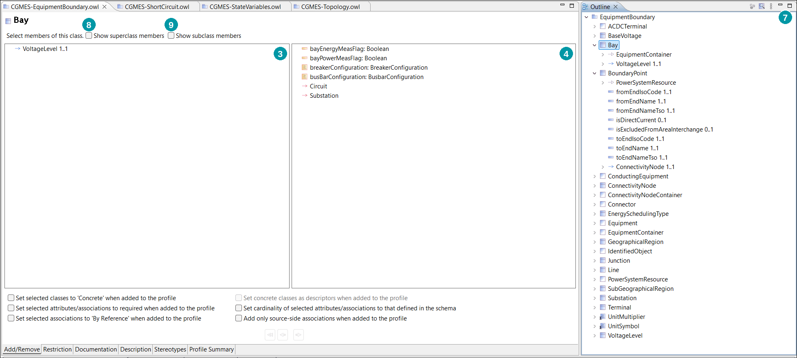
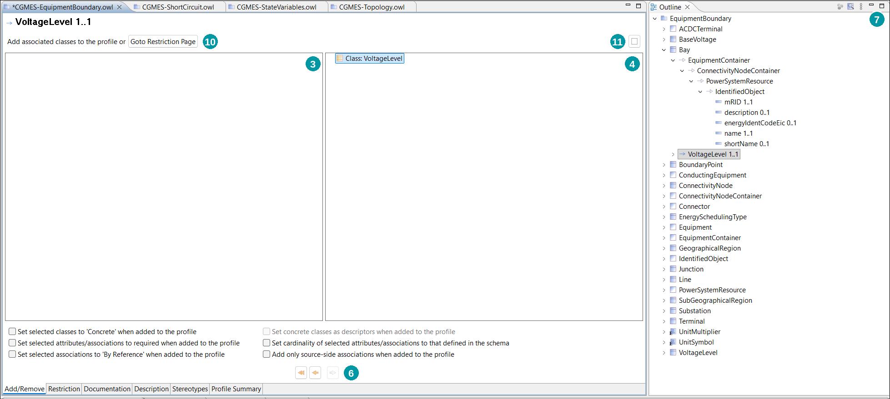
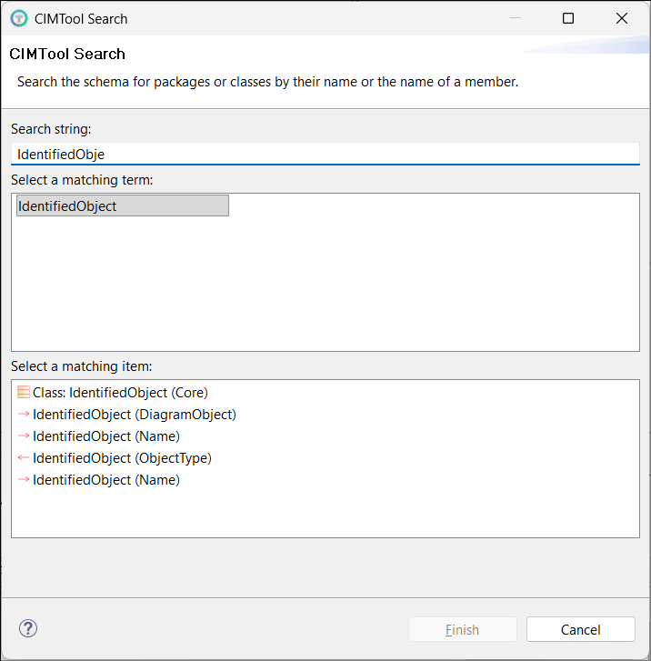

Add/Remove Tab
The Add/Remove tab is where you choose what goes into a profile: which classes, and which attributes and associations of each class. It always works on the element selected in the Outline view. The profile pane, on the left of the tab, shows what the profile already contains at that point, and the schema pane, on the right, shows what you can still add from the schema (the CIM and any extensions). You add items by moving them from the schema pane to the profile pane, and remove them by moving them back.

The Add/Remove tab for the CGMES EquipmentBoundary profile, with the profile itself selected in the Outline view (7). The profile pane (3) lists the classes in the profile; the schema pane (4) lists the schema's packages, here opened to IEC61970 > Base > AuxiliaryEquipment. The numbers match the table below.
The Controls on the Tab
With the profile itself selected in the Outline view, as in the screenshot, the tab has these controls. The numbers match the screenshot. Buttons that show only an icon are pictured here with their name, which CIMTool shows when you hover over them.
| Control | What it does |
|---|---|
| 1Allow multiple profiles per class checkbox | Shows schema classes in the schema pane (4) even if they are already in the profile, so you can add a class a second time as a separate profile class. Leave it cleared for normal work. See Allow Multiple Profiles per Class. Used mainly in XSD and JSON Schema profiles; RDFS profiles rarely need it. |
| 2 Search Schema button | Opens the CIMTool Search wizard to find a package or class by name, or by the name of one of its members, and selects it in the schema pane (4). See Search Schema. |
| 3Profile pane | What the profile contains at the item selected in the Outline view (7): here, the classes in the profile. Select items here to remove them. Double-click an item to select it in the Outline view, which moves the tab down to that item. |
| 4Schema pane | What you can add from the schema at the item selected in the Outline view (7): here, the schema's packages and classes. Items already in the profile are left out. Select items here to add them. |
| 5Option checkboxes | Settings applied to the items you add next, such as making classes concrete or attributes required. They are cleared after each addition. See Options Applied When Adding. |
| 6 Add the selected classes to the profile including members button | Adds the classes selected in the schema pane together with their own single-valued attributes and associations. See Adding and Removing. |
| 6 Add the selected items to the profile button | Adds just the items selected in the schema pane. |
| 6 Remove the selected items from the profile button | Removes the items selected in the profile pane. Removing an association does not remove the class it refers to; see Removing an Association. |
| 7Outline view, beside the editor | Not part of the tab, but it decides what the tab works on: the profile itself, a class, an association or an attribute. See What the Tab Shows for Each Selection. |
The buttons are enabled only while something is selected in the pane they act on.
What the Tab Shows for Each Selection
Select an element in the Outline to choose what you are working on. You usually start at the profile itself to add classes, then select a class to choose its members, then select an association to choose the classes it can refer to.
| Selected in the Outline | Profile pane | Schema pane | Extra controls |
|---|---|---|---|
| The profile itself (the top element). The tab reads "Select classes or packages to profile." | The classes in the profile. | The schema's packages and classes, apart from those already in the profile. | Allow multiple profiles per class; Search Schema |
| A class. The tab reads "Select members of this class." | The attributes and associations already in this profile class. | The class's attributes and associations that are not yet in it. | 8Show superclass members: also lists the members the class inherits, grouped under each superclass. Used mainly in XSD and JSON Schema profiles; RDFS profiles rarely need it. 9Show subclass members: also lists the members of its subclasses, grouped under each subclass. Used mainly in XSD and JSON Schema profiles; RDFS profiles rarely need it. |
| An association. The tab reads "Add associated classes to the profile or" next to Goto Restriction Page. | The classes the association can refer to in this profile. | The class at the other end of the association and its subclasses. | 10Goto Restriction Page: switches to the Restriction tab to set the association's cardinality and other details. 11 Create a local, anonymous profile class button: see Adding and Removing. Used mainly in XSD and JSON Schema profiles; RDFS profiles rarely need it. |
| An attribute. The tab reads "The datatype name will be added to the profile." | Nothing to choose: the tab only confirms the attribute's datatype, which is set by the schema. | 10Goto Restriction Page | |
| Anything else, such as a heading in the Outline | The tab reads "Select another item in the profile outline". | ||

The Add/Remove tab with the class
Bay selected in the Outline view (7). The profile pane (3) shows the one member already in this profile class, the association VoltageLevel with cardinality 1..1. The schema pane (4) lists the members of Bay not yet added: two Boolean attributes, two attributes typed by enumerations, and the associations Circuit and Substation. Show superclass members (8) and Show subclass members (9) are cleared, so only the members of Bay itself are listed.

The Add/Remove tab with the association
VoltageLevel of Bay selected in the Outline view (7). The profile pane (3) is empty because no class has been chosen yet for this association. The schema pane (4) offers VoltageLevel, the class at the other end, which is selected, so the add buttons (6) are enabled. Next to the label at the top are Goto Restriction Page (10) and, at the right, Create a local, anonymous profile class (11).
Adding and Removing
Select one or more items in the schema pane, set any options you want, then choose an add button. To remove items, select them in the profile pane and choose the remove button.
| Button | What it adds or removes |
|---|---|
| Add the selected items to the profile |
|
| Add the selected classes to the profile including members |
|
| Remove the selected items from the profile | Removes the items selected in the profile pane: classes from the profile, members from a class, or permitted classes from an association. Removing an association does not remove the class it refers to; see Removing an Association. |
| Create a local, anonymous profile class (association selected only) | Adds the selected class as an anonymous class that belongs to this association alone, instead of a named profile class shared across the profile. Use it when the association needs its own restricted view of the class. Anonymous classes are never concrete. See Associations and Anonymous Classes. Used mainly in XSD and JSON Schema profiles; RDFS profiles rarely need it. |
If one addition would add 100 or more elements, for example a large package, CIMTool asks you to confirm before going ahead.
Removing an Association
When you remove an association, CIMTool removes only the association. The class it referred to stays in the profile, because other parts of the profile may still use it. After removing an association, check whether that class is still needed, for example whether another association still refers to it, and remove it too if it is not:
- Select the profile itself in the Outline view (7).
- Select the class in the profile pane (3).
- Choose Remove the selected items from the profile.
What CIMTool reports about a class that is no longer used depends on the profile's target. Check the notes on the Profile Real-Time Preview diagram, which differ for RDFS, XSD and JSON Schema profiles; see The Profile Real-Time Preview and Your Target.
Options Applied When Adding
The six checkboxes below the panes set how the items you add are defined. They apply to the next addition only and are cleared after it, so set them each time. Every setting can be changed later on the Restriction tab. Some of them mean slightly different things depending on what the profile is designed to generate; see Profile Targets.
| Option | Applies to | Effect |
|---|---|---|
| Set selected classes to 'Concrete' when added to the profile | Classes added by either add button | Marks the added classes as concrete, so that instance data can contain objects of that class. Enumerations, compounds, CIM datatypes and primitives cannot be concrete and are left as they are. Ignored for anonymous classes. |
| Set concrete classes as descriptors when added to the profile | Classes added with Concrete checked | Has no effect in this release. To make a class a descriptor, select it and use the Restriction tab (see Descriptor Classes). Available only when Concrete is checked: unchecking Concrete clears this option and grays it out. |
| Set selected attributes/associations to required when added to the profile | Attributes and associations added | Makes each added member required: a minimum cardinality of 1. Applies to a class's own and inherited members; members shown from subclasses are left optional. |
| Set cardinality of selected attributes/associations to that defined in the schema | Attributes and associations added | Copies the minimum and maximum cardinality from the schema instead of leaving the member optional and unbounded. With required also checked, the minimum is 1 and the maximum comes from the schema. |
| Set selected associations to 'By Reference' when added to the profile | Associations added | Marks the added associations as By Reference. The schema generated from the profile then defines each such association as a reference, so that instance data identifies the associated object instead of containing it. What that means depends on the profile's target:
|
| Add only source-side associations when added to the profile | The including members button only | Also adds the class's multi-valued associations, but only those for which the class is the source side, leaving out the opposite role of each association. Without it, the including-members button adds no multi-valued associations at all. See Source and Target Sides of an Association. |
Source and Target Sides of an Association
When an association is added to a profile, it is added to one of the two classes it connects. That class is the source side: the association starts from it. The class at the other end is the target (or destination) that the association points to.
When profiling for RDFS, the usual convention for an association whose role ends are 0..* and 0..1 is to make the class at the 0..* end the source side, and add the association there, so that it points to the class at the end with the narrower cardinality. Each instance of the source class then refers to at most one target.
Allow Multiple Profiles per Class
Normally each schema class appears in a profile once, and the schema pane hides classes that are already in the profile. Check Allow multiple profiles per class (with the profile itself selected in the Outline) to show them again, so that you can add a class a second time. The second profile class gets the same name with a number added, such as Terminal1, and can have its own members and restrictions.
This option is used mainly in XSD and JSON Schema profiles; RDFS profiles rarely need it.
Use it when one schema class needs to appear in different roles in the same profile, each with different members or cardinalities. Rename each profile class on the Description tab so that the roles are clear. See Multiple Profiles.
Search Schema
The CIM has hundreds of classes, so browsing the schema pane for one can be slow. With the profile itself selected in the Outline, choose Search Schema to open the CIMTool Search wizard. It finds packages and classes by their own name, or by the name of one of their attributes or associations.

The CIMTool Search wizard. Typing
IdentifiedObje finds the term IdentifiedObject, which matches the class IdentifiedObject in the Core package and associations named IdentifiedObject in other classes.
| Control | What it does |
|---|---|
| Search string | Type the start of a name. Matching starts as you type. The first search after the wizard opens indexes the schema, which can take a moment. |
| Select a matching term | The names in the schema that start with what you typed, up to 100. Choose the one you mean. If only one name matches, it is chosen for you. |
| Select a matching item | Everything in the schema with the chosen name. The icon shows what each item is, such as a class or an association, and the name in brackets shows where it sits: the package of a class, or the class that has an attribute or association. Choose the one you want. |
| Finish | Enabled once an item is chosen. Closes the wizard and selects the item in the schema pane, opened to where it sits in the schema. If you chose an attribute or association, the class that has it is selected, so that you can add the class. |
| Cancel | Closes the wizard without changing the selection. |
| ? (help) | Opens help for the wizard in a panel beside it, with links to this section and to Searching Schemas and Profiles. F1 does the same. |
See also Searching Schemas and Profiles.